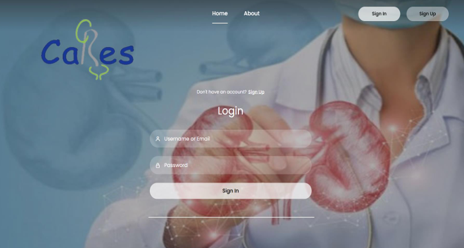

Intelligent Profiling System in Urology
This project explores the use of decision-support systems and machine learning in the medical field to improve resident experience and role assignment. Using data collected since 2018 from the CARES database, the system predicts resident roles based on skill level and performance.
Core Features
- Resident and chief of service authentication system
- Resident dashboard displaying validated and pending activities
- Automated profiling process to assign medical roles
- Validation of activities by the chief of service
- Leave request management
- PDF generation for activity planning and reporting
User Interfaces
- Resident interfaces: dashboard, new activities, leave requests, privacy settings
- Chief of service interfaces: dashboard, activity validation, profiling, leave management
Additional Functionalities
- Daily planning of medical activities
- Light / dark mode support
- Secure session management (login / logout)
- Real-time notifications after profiling assignments
This platform demonstrates the integration of data-driven decision making, machine learning algorithms, and user-centered interface design in a real medical context.
🔗 View the source code on GitHub